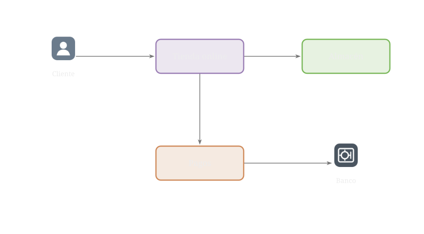
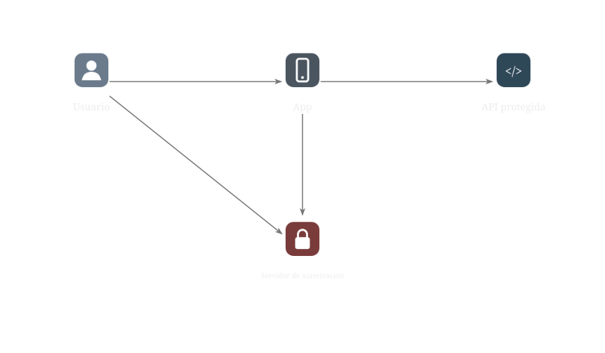
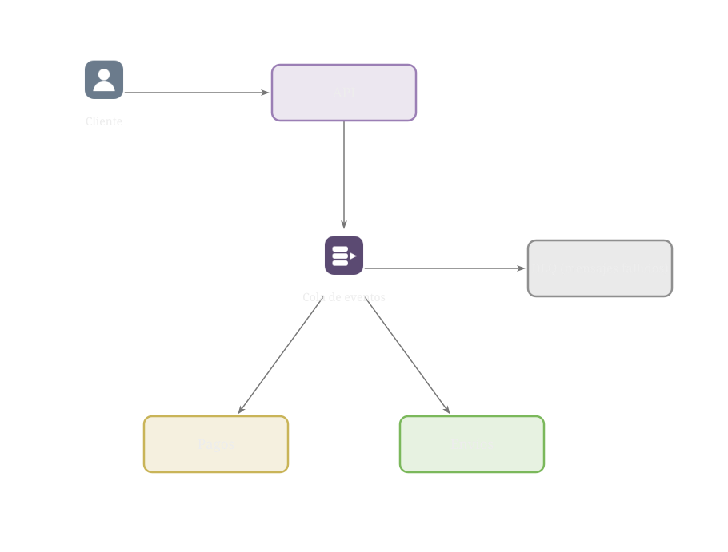

Ejemplos
Tres sistemas, cada uno con dos Historias: una cuando todo va bien y otra cuando algo cambia. Pulsa ▶ y míralas pasar paso a paso. Después ábrelas en el editor y cámbialas: son tuyas.

Compra online
Qué pasa cuando alguien paga en una tienda, y qué pasa si el banco no responde.
Aprenderás: peticiones y respuestas por la misma conexión, una espera de llegada (el almacén no se entera hasta que el cobro llega) y un fallo real.

Inicio de sesión (OAuth 2.0)
Cómo una app consigue permiso para usar tu cuenta sin ver tu contraseña.
Aprenderás: idas y vueltas, el consentimiento, el código que se cambia por un token y por qué la app espera al token antes de llamar a la API.

Pedido asíncrono con cola
Un pedido que se publica en una cola y lo procesan varios servicios a la vez, cada uno a su ritmo.
Aprenderás: asincronía (el cliente no espera), concurrencia, servicios independientes y qué pasa con un mensaje que falla (DLQ).
«Fallo» es un fallo de verdad: el sistema marca el paso como no completado porque el destino está caído. «Ruta alternativa» es otro camino que cuenta la Historia, sin que nada falle.
Los archivos son .fluyo.json normales: puedes descargarlos, versionarlos en git y abrirlos con el botón Abrir del editor.
¿No está el que buscas?
Empieza en blanco: abre el editor y coloca la primera forma. La documentación explica el lienzo, las Historias y cómo compartirlas en una sola página.
Si dibujas un sistema que crees que le sirve a más gente, mándalo como Pull Request a itsnect/fluyo. Un ejemplo es un archivo .fluyo.json con al menos una Historia y una línea en la lista blanca.